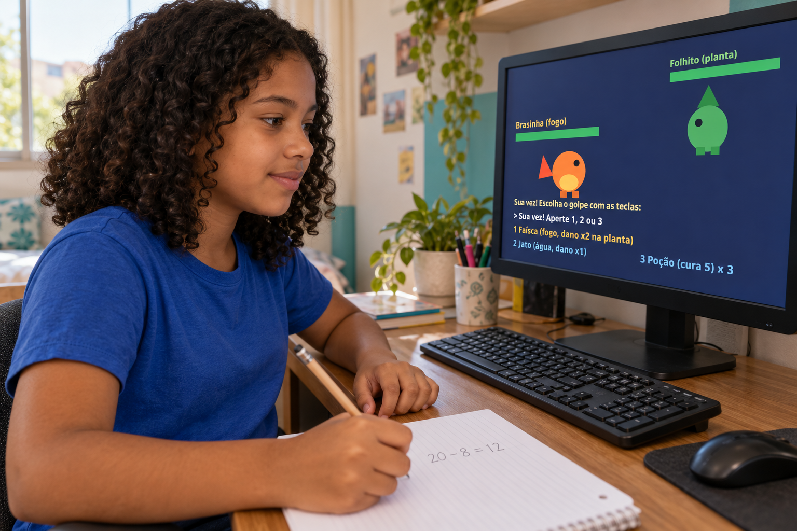
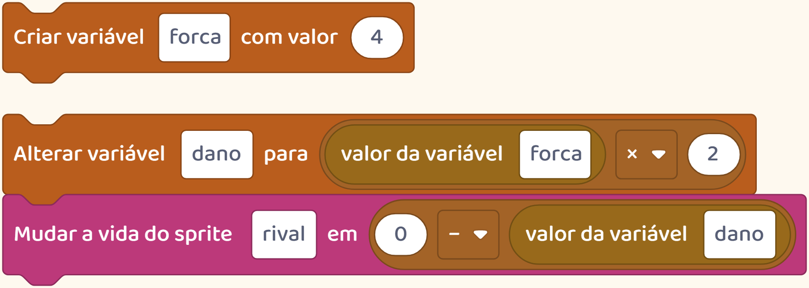
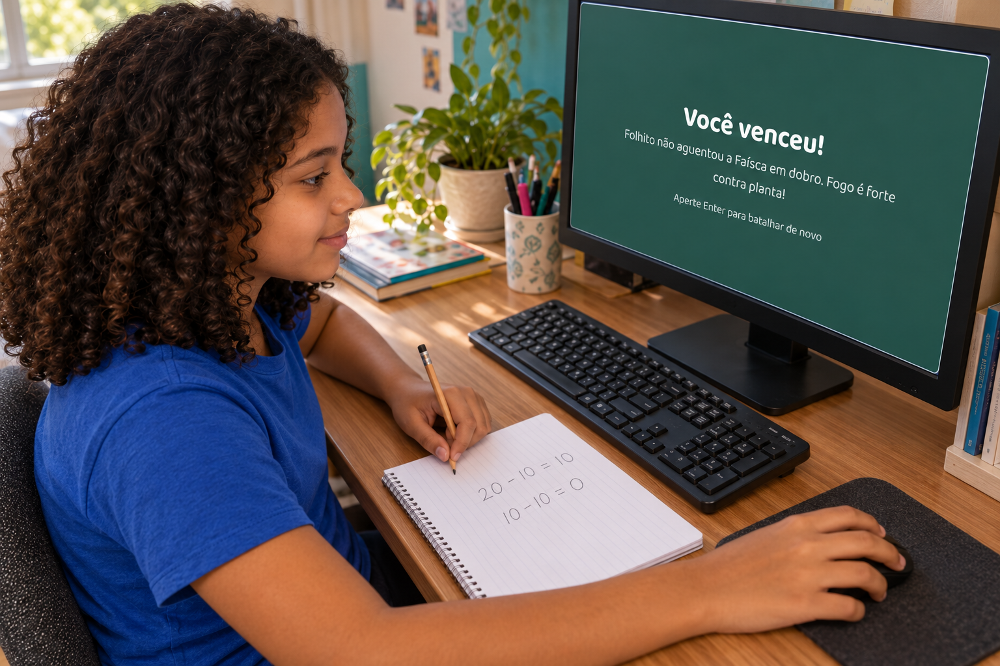
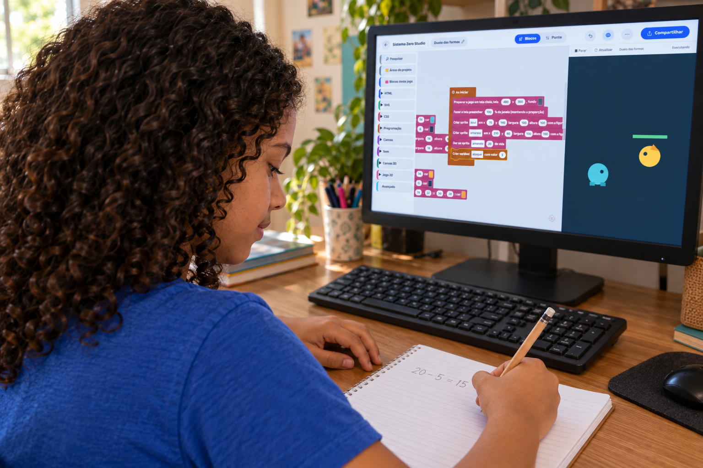

Por trás do jogo
Uma conta pode decidir quanto dura a batalha de um jogo.
Seu filho pode escolher os números e testar o resultado.

Uma conta pode decidir quanto dura a batalha de um jogo.
Seu filho pode escolher os números e testar o resultado.

Imagine um monstrinho com vinte pontos de vida.
Cada ataque tira oito. Quantos ataques são necessários para vencer?
Depois do primeiro, restam doze. Depois do segundo, restam quatro.
É preciso um terceiro ataque para terminar a batalha.
Ao criar o jogo, a criança escolhe a força do ataque.

Na nossa demonstração, uma instrução faz o ataque tirar oito pontos de vida.
Agora imagine que cada ataque tire dez.
Dois ataques já acabam com os vinte pontos. A batalha ficou mais curta.
Quem cria pode fazer essa conta antes de testar.

Depois joga para ver se a luta ficou como imaginou.
Assim, os números ajudam a tomar uma decisão sobre o jogo.

Siga o perfil para ver mais coisas que as crianças podem aprender criando.